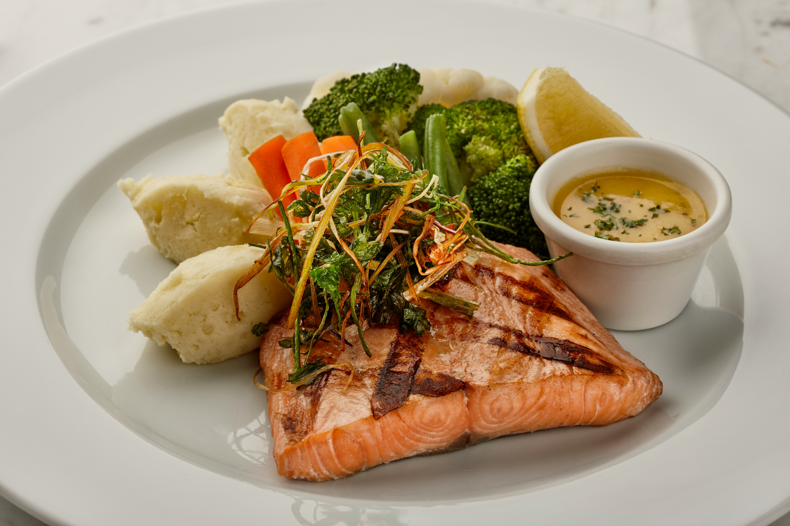
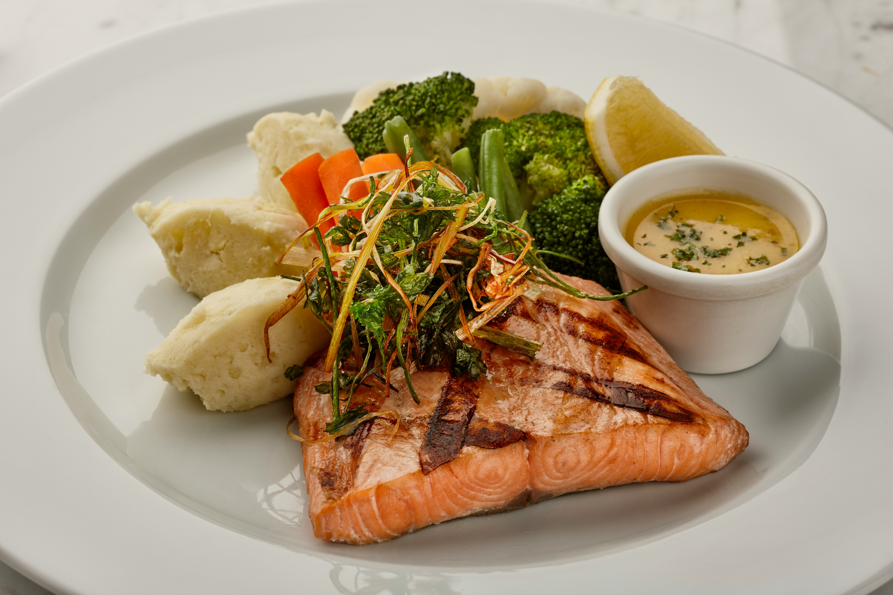

Our Story
Welcome to The Alibi, a culinary haven where passion for food meets a warm, inviting atmosphere. Our story began with a simple dream: to create a restaurant that not only serves exceptional dishes but also fosters a sense of community and connection.
Founded in 2018, The Alibi has quickly become a beloved dining destination in Oakville. Our menu is inspired by contemporary Italian cuisine, featuring fresh, locally sourced ingredients and innovative flavor combinations. From our signature Lobster Ravioli to our delectable tiramisu, every dish is crafted with care and attention to detail.
At The Alibi, we believe that dining is more than just a meal; it's an experience. Our friendly staff is dedicated to providing impeccable service, ensuring that every guest feels welcomed and at home. Whether you're celebrating a special occasion or simply enjoying a night out, we invite you to savor the flavors and create lasting memories with us.

Featured Dishes
Creamy Pesto Pasta
Fresh basil pesto with linguine.
Grilled Salmon
Perfectly grilled salmon with asparagus.